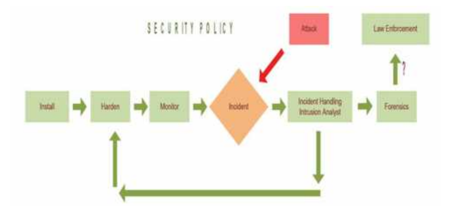

Era Revolusi Industri keempat ini diwarnai oleh kecerdasan buatan
(artificial intelligence), super komputer, rekayasa genetika,
teknologi nano, mobil otomatis, dan inovasi. Perubahan tersebut
terjadi dalam kecepatan eksponensial yang akan berdampak terhadap
ekonomi, industri, pemerintahan, dan politik. Pada era ini
Industri 4.0 adalah sebuah istilah yang diciptakan pertama kali di
Jerman pada tahun 2011 yang ditandai dengan revolusi digital.
Industri ini merupakan suatu proses industri yang terhubung secara
digital yang mencakup berbagai jenis teknologi, mulai dari 3D
printing hingga robotik yang diyakini mampu meningkatkan
produktivitas. Sebelum ini telah terjadi tiga revolusi industri yang
ditandai dengan:
Ditemukannya mesin uap dan kereta api tahun 1750-1930;
Penemuan listrik, alat komunikasi, kimia, dan minyak tahun
1870-1900;
Penemuan komputer, internet, dan telepon genggam tahun
1960-sekarang.
Isu Pengembangan Perangkat Lunak dan Gim
Sebagai pengembang perangkat lunak dan gim, penting bagi kita untuk
mengetahui berbagai isu yang berkembang seperti dampak positif
negatif pengembangan perangkat lunak, internet of thing, cloud
computing, information security, personal branding dan hak kekayaan
intelektual.
Dampak Positif dan Negatif Perangkat Lunak dan Gim
Pengaruh Positif dan Negatif pada perangkat lunak
Pengembangan perangkat lunak diarahkan pada realisasi sistem
aplikasi yang mampu menunjang proses transaksi ekonomi yang
cepat dan aman, serta pengambilan keputusan yang benar dan
cepat. Harga yang terjangkau dan daya saing pada tingkat
internasional merupakan salah satu kriteria yang
dipersyaratkan, khususnya mendukung kebijakan substitusi
impor. Perangkat lunak sistem operasi dengan kehandalan
tinggi dan kebutuhan sumber daya memori maupun prosesor yang
minimal serta fleksibel terhadap perangkat keras maupun
program aplikasi yang baru, merupakan prioritas yang harus
dikembangkan. Program aplikasi juga perlu dikembangkan,
terutama yang terkait dengan sektor perekonomian, industri,
pendidikan, maupun pemerintahan.
Dalam mempercepat pengembangan dan pendayagunaan perangkat
lunak, perlu pula ditinjau implementasi konsep open source.
Penerapan konsep open source ini diharapkan mampu
menggalakkan industri perangkat lunak dengan partisipasi
seluruh lapisan masyarakat tanpa melakukan pelanggaran hak
cipta.
Pengaruh Positif dan Negatif pada Gim
Menurut Anhar (2010:27) Beberapa dampak positif bermain gim
adalah sebagai berikut:
Membantu perkembangan koordinasi tangan, mata, motorik,
dan kemampuan spasial
Meningkatkan kemampuan membuat analisa, keputusan yang
cepat dan berpikir secara mendalam
Sedangkan Menurut Anhar (2010: 33), dampak negatif dari gim
timbul karena 89% dari gim mengandung beberapa konten
kekerasan. Menurut pendapat Darma (2011:67) dampak negatif
game online pada siswa atau anak - anak adalah sebagai
berikut:
Anak lebih banyak menghabiskan waktu bermain gim pada jam
di luar sekolah
Konsentrasi belajar terganggu karena pikiran siswa
cenderung mengarah pada permainan yang ada di dalam gim
Tertidur di sekolah
Sering melalaikan tugas dan tanggung jawab sebagai siswa
Nilai di sekolah menurun
Internet of Thing (IoT)
IoT merupakan segala aktifitas yang pelakunya saling
berinteraksi dan dilakukan dengan memanfaatkan internet. Dalam
penggunaannya, Internet of Thing banyak ditemui dalam berbagai
aktifitas, contohnya : banyaknya transportasi online, e-
commerce, pemesanan tiket secara online, live streaming,
elearning, dan lain-lain bahkan sampai alat-alat untuk membantu
dibidang tertentu seperti remote temperature sensor, GPS
tracking, dan sebagainya yang menggunakan internet atau jaringan
sebagai media untuk melakukannya.
Cloud Computing
Cloud Computing merupakan teknologi yang memberikan pelayanan
secara luas dengan akses internet dimanapun berada, media
penyimpanan cloud computing berada di internet.
Cloud computing menyimpan semua data di server yang tidak tau
dimana letak server tersebut. Ada 3 layanan cloud computing yang
dapat digunakan yaitu:
Software as a Service (SaaS)
Layanan cloud computing dimana pengguna dapat menggunakan
aplikasi atau perangkat lunak (software) yang disediakan
oleh cloud provider (penyedia jasa cloud computing). Contoh
dari layanan SaaS adalah layanan produktivitas seperti
Office365, GoogleDocs, dan Adobe Creative Cloud. Layanan
email seperti Gmail, YahooMail, dan LiveMail.
Platform as a Service (PaaS)
Layanan yang difasilitasi oleh cloud provider untuk
menyediakan platform bagi pengembangan aplikasi-aplikasi.
Pengguna dapat berfokus pada pengembangan aplikasi tanpa
perlu mengkhawatirkan platform aplikasi tersebut. Contoh
dari layanan PaaS adalah Amazon Web Service, Windows Azure,
dan GoogleApp Engine.
Infrastucture as a Service (IaaS)
astructure as a Service (IaaS) Pada layanan ini pengguna
dapat menyewa infrastruktur yang di sediakan oleh cloud
provider (unit komputasi, storage, memory, network, dan
sebagainya). Pada layanan ini seluruhnya pengguna yang
menentukan perangkat perangkat untuk cloud computing yang
akan digunakan, jika sistem virtual di cloud tersebut
menggunakan source yang besar, pengguna dapat menambahkan
RAM sesuai kebutuhan. Contoh dari layanan IAAS adalah Amazon
EC2, Rackspace Cloud, dan Windows Azure
Information Security
Saat ini Indonesia tengah dalam keadaan mendesak cyber-security
atau keamanan dunia maya karena melihat kenyataan bahwa tingkat
kejahatan di dunia maya atau cyber crime di Indonesia sudah
mencapai tahap memprihatinkan. Namun berbeda dengan penangganan
kejahatan lainnya, cyber- security membutuhkan pemikiran yang
komprehensif untuk menangganinya.
Cyber-security adalah kumpulan alat, kebijakan, konsep keamanan,
perlindungan keamanan, pedoman, pendekatan manajemen risiko,
tindakan, pelatihan, praktik terbaik, jaminan dan teknologi yang
dapat digunakan untuk melindungi lingkungan cyber dan organisasi
dan aset pengguna. Organisasi dan aset pengguna dalam
cyber-security termasuk perangkat yang terhubung komputasi,
personil, infrastruktur, aplikasi, layanan, sistem
telekomunikasi dan totalitas informasi yang dikirimkan dan/atau
disimpan dalam lingkungan maya.

Diagram ruang lingkup cyber security
Personal Branding
Branding atau pelabelan lebih akrab dilakukan di dunia
pemasaran. Pelabelan dilakukan karena begitu banyak produk
sejenis yang beredar, sehingga diperlukan pembeda bagi produk
yang satu dengan produk yang lain. Hal itu bertujuan untuk
membuatnya lebih menonjol dibanding produk sejenis lainnya.
Prinsip dasar itulah yang kemudian diterapkan dalam konteks
personal branding.
Personal branding dapat mengatur presepsi seseorang terhadap
orang lain, dengan menceritakan pengalaman kepada orang lain
secara natural sehingga orang lain berpikir bahwa persepsi
tersebut dibangun dengan sendirinya (Montoya, 2002). Personal
branding juga dapat dikatakan sebagai proses di mana seseorang
dipandang sebagai sebuah brand (merek) oleh target market (Lair,
Sullivan, dan Cheney, 2005:35). Dapat disimpulkan bahwa personal
branding adalah suatu proses pembentukan persepsi masyarakat
terhadap aspek-aspek yang dimiliki seseorang, diantaranya
kepribadian, kemampuan, atau nilai- nilai, dan bagaimana
stimulus-stimulus ini menimbulkan persepsi positif dari
masyarakat yang pada akhirnya dapat digunakan sebagai alat
pemasaran (McNally & Speak, 2002).